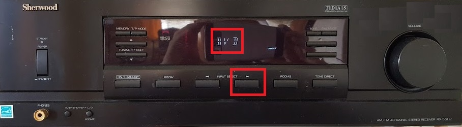
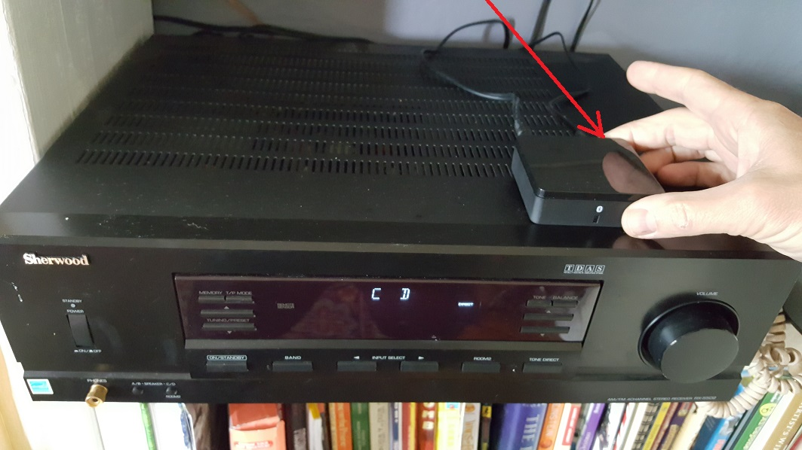
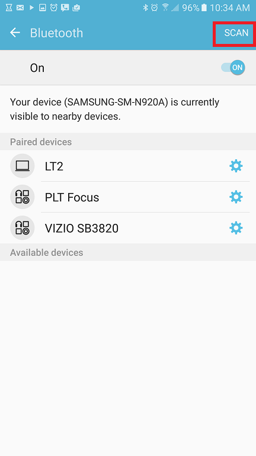
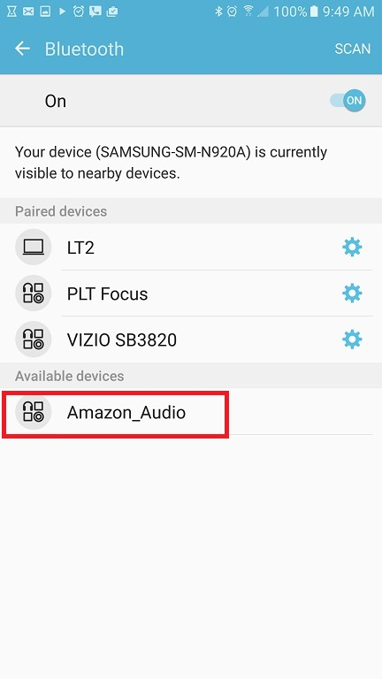

<body bgcolor=#cccccc><font face=arial size=+3>
To control the stereo using your phone:
<ul>
    <li>Repeatedly press the "INPUT SELECT" button on the face of the stereo until you have chosen "CD" (not "DVD" as highlighted below):
    <br><br>
    </li>
    <li>Put the bluetooth receiver into pairing mode by pressing the button <b>behind</b> the device for a full second or so
    <br><br>
    </li>
    <li>If you held the button down long enough, the blue light on the bluetooth receiver should begin blinking very rapidly</li>
    <li>On your device, scan for bluetooth devices
    <br><br>
</li>
<li>Select Amazon_Audio to connect
    <br><br>
</li>
<li>Enjoy</li>
</ul>
</font>
